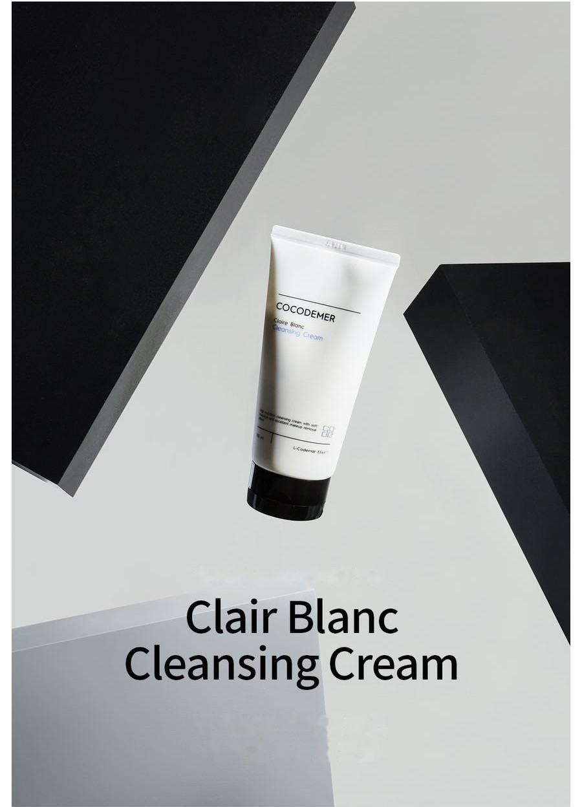
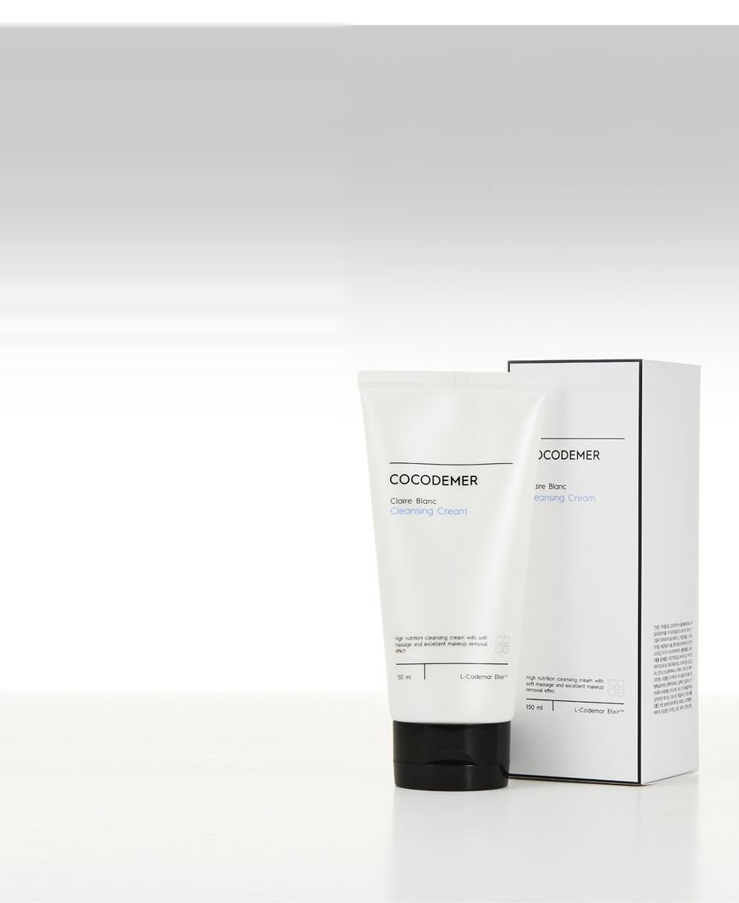
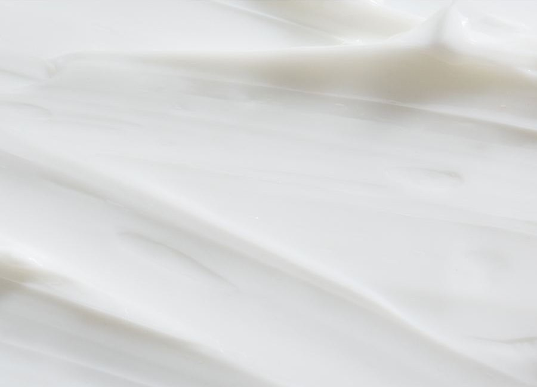
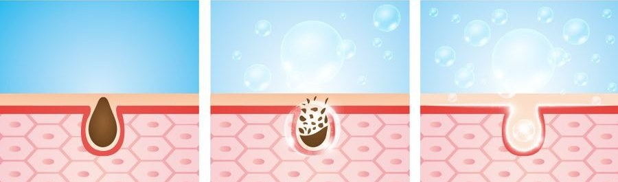
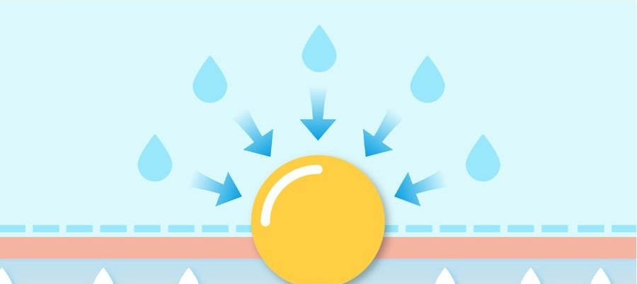
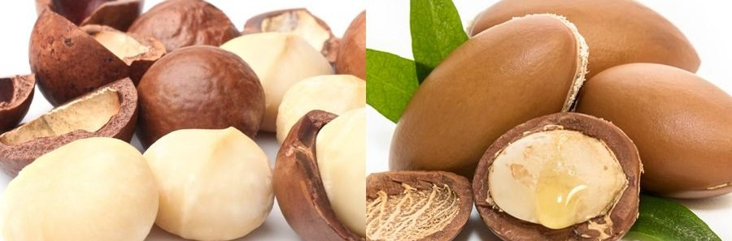

COCODEMER Clair Blanc Cleansing Cream
| Inhoud | 150ml |
|---|---|
| Geschikt voor | Alle huidtypes |
| Kerntechnologie | L-CODEMAR ELIXIR™ |
| Fabrikant · Verantwoordelijke distributeur | JUNGCOS CO., LTD. / COCODEMER CO., LTD. |
Dit product is ontwikkeld als onderdeel van ons assortiment cosmetica op maat. Het is momenteel niet te koop. Voor vragen over herproductie of vernieuwing kunt u contact met ons opnemen via de B2B-aanvraag.

Een zachte, hydraterende reinigingscrème zonder plakkerig residu

Een rijk voedende dieptereinigende crème die zacht over de huid glijdt
Fijne deeltjes nemen onzuiverheden op en reinigen zacht, waarbij de huid zacht en gehydrateerd blijft en zelfs zware make-up volledig wordt verwijderd.
Oliën van natuurlijke oorsprong — waaronder macadamia-, amandel- en groene-theezaadolie — maken een ruwe huid glad en laten haar na het reinigen stralen.
Een huidvriendelijke basis van plantaardige olie wordt in liposomen verpakt tot microfijne deeltjes. Bij contact smelt deze snel en verwijdert make-up zacht en met weinig irritatie.
Oliën van natuurlijke oorsprong, waaronder macadamiaolie, amandelolie en groene-theezaadolie, voeden de huid ook na het reinigen en laten haar fris en gehydrateerd ogen.
Fijne deeltjes nemen onzuiverheden op en verwijderen make-up zacht; ze maken een ruwe textuur glad en houden de huid gehydrateerd,
ook na het afnemen met een tissue.
* Het bovenstaande geldt uitsluitend voor het specifieke ingrediënt.

Code van de belangrijkste werkzame stof
- AoArgan OilNatuurlijk voedende olie
- MsMeadowfoam Seed OilGaat verdamping van vocht tegen
- CaCentella AsiaticaHuidkalmering
- HiHydrogenated LecithinHuidconditionering

De reinigende bestanddelen verwijderen zelfs zware make-up in één keer en reinigen resten en onzuiverheden diep uit de poriën, zonder de vettige film die oliën vaak achterlaten.

Het ondersteunt de elasticiteit en textuur van de huid en helpt met 30% wateroplosbare hydraterende ingrediënten een gezonde vochtbalans in stand te houden, zonder trekkerig gevoel na dieptereiniging.

Ingrediënten die lijken op de eigen talg van de huid verzachten dode huidcellen aan het oppervlak voor een zachte exfoliatie, zodat de huid helder en glanzend wordt.
* Het bovenstaande beschrijft de ingrediënten, niet het eindproduct.
Ingrediëntenreferentie bekijken →
L-CODEMAR ELIXIR™
Een eigen technologie van COCODEMER.
Onze ongeëvenaarde meerlaagse nanogel-emulsie-inkapselingstechnologie houdt de kernwerkstoffen — kokoswater, fytosterolen, 20 aminozuren en honingextract — in een stabiel complex. Dat complex wordt vervolgens opgebouwd tot een huidvriendelijke liposomale vorm die de structuur van de huid zelf nabootst, waardoor de afgifte aan de huid zo efficiënt mogelijk verloopt.
L-Codemar Elixir™ versterkt de verbindingen tussen de huidcellen. Het herstelt een beschadigde barrière en vormt een sterke beschermende film, zodat de hydratatie langer aanhoudt.

Tekst in de afbeelding hierboven
L-CODEMAR ELIXIR™
- KOKOSWATER
- HONINGEXTRACT
- 20 SOORTEN AMINOZUREN
- FYTOSTEROL

Tekst in de afbeelding hierboven
- Microben, fijnstof, geel stof, verontreinigende stoffen en luchtvervuiling
- Overmatig waterverlies
Beschadigde huid
Beschadigde intercellulaire lipiden verzwakken de verbindingen tussen de epidermiscellen
- Toegevoegde intercellulaire lipiden ↑
- Werkzame stoffen
- Beschermt tegen externe stress en verontreinigende stoffen
- Minder waterverlies
Gezonde huid
Aangevulde lipiden herstellen de intercellulaire matrix → sterkere verbindingen tussen de cellen
Gebruiksaanwijzing
- Neem een geschikte hoeveelheid in de handpalm en breng aan over het hele gezicht.
- Rol na 10–15 seconden, zodra de crème in olie is veranderd, zachtjes over de huid alsof u masseert.
- Maak de handen licht nat om te emulgeren en spoel daarna meerdere keren af met lauw water.
Een rijk voedende dieptereinigende crème die zacht over de huid glijdt
Fijne deeltjes nemen onzuiverheden op en reinigen zacht, waarbij de huid zacht en gehydrateerd blijft en zelfs zware make-up volledig wordt verwijderd.
Oliën van natuurlijke oorsprong — waaronder macadamia-, amandel- en groene-theezaadolie — maken een ruwe huid glad en laten haar na het reinigen stralen.
Een huidvriendelijke basis van plantaardige olie wordt in liposomen verpakt tot microfijne deeltjes. Bij contact smelt deze snel en verwijdert make-up zacht en met weinig irritatie.
Oliën van natuurlijke oorsprong, waaronder macadamiaolie, amandelolie en groene-theezaadolie, voeden de huid ook na het reinigen en laten haar fris en gehydrateerd ogen.
Fijne deeltjes nemen onzuiverheden op en verwijderen make-up zacht; ze maken een ruwe textuur glad en houden de huid gehydrateerd, ook na het afnemen met een tissue.
De reinigende bestanddelen verwijderen zelfs zware make-up in één keer en reinigen resten en onzuiverheden diep uit de poriën, zonder de vettige film die oliën vaak achterlaten.
Het ondersteunt de elasticiteit en textuur van de huid en helpt met 30% wateroplosbare hydraterende ingrediënten een gezonde vochtbalans in stand te houden, zonder trekkerig gevoel na dieptereiniging.
Ingrediënten die lijken op de eigen talg van de huid verzachten dode huidcellen aan het oppervlak voor een zachte exfoliatie, zodat de huid helder en glanzend wordt.
* Het bovenstaande beschrijft de ingrediënten, niet het eindproduct.
L-CODEMAR ELIXIR™
Een eigen technologie van COCODEMER. Onze ongeëvenaarde meerlaagse nanogel-emulsie-inkapselingstechnologie houdt de kernwerkstoffen — kokoswater, fytosterolen, 20 aminozuren en honingextract — in een stabiel complex. Dat complex wordt vervolgens opgebouwd tot een huidvriendelijke liposomale vorm die de structuur van de huid zelf nabootst, waardoor de afgifte aan de huid zo efficiënt mogelijk verloopt. L-Codemar Elixir™ versterkt de verbindingen tussen de huidcellen. Het herstelt een beschadigde barrière en vormt een sterke beschermende film, zodat de hydratatie langer aanhoudt.
① Neem een geschikte hoeveelheid in de handpalm en breng aan over het hele gezicht. ② Rol na 10–15 seconden, zodra de crème in olie is veranderd, zachtjes over de huid alsof u masseert. ③ Maak de handen licht nat om te emulgeren en spoel daarna meerdere keren af met lauw water.
| Nominale inhoud (volume of gewicht) | 150ml |
|---|---|
| Geschikt voor | Alle huidtypes |
| Houdbaarheid / houdbaarheid na opening | 30 maanden vanaf de productiedatum; binnen 12 maanden na opening gebruiken |
| Gebruiksaanwijzing | Neem een geschikte hoeveelheid in de handpalm en masseer gelijkmatig over het gezicht. Neem af met een tissue en reinig daarna een tweede keer met een reinigingsschuim en water. |
| Fabrikant van cosmetica | JUNGCOS CO., LTD. |
| Verantwoordelijke distributeur | COCODEMER CO., LTD. |
| Land van herkomst | Republiek Korea |
| Volledige ingrediëntenlijst (INCI) | Mineral Oil, Cocos Nucifera (Coconut) Water, Polysorbate 60, Methylpropanediol, Isopropyl Myristate, Paraffin, Caprylic/Capric Triglyceride, Cetyl Alcohol, 1,2-Hexanediol, Butylene Glycol, Glyceryl Stearate, Macadamia Ternifolia Seed Oil, PEG-100 Stearate, Centella Asiatica Extract, Ficus Carica (Fig) Fruit Extract, Honey Extract, Argania Spinosa Kernel Oil, Camellia Sinensis Seed Oil, Hydrogenated Lecithin, Limnanthes Alba (Meadowfoam) Seed Oil, Prunus Amygdalus Dulcis (Sweet Almond) Oil, Alanine, Arginine, Aspartic Acid, Beeswax, Carnitine, Ceramide NP, Citrulline, Dimethicone, Disodium EDTA, Ethylhexylglycerin, Glutamic Acid, Glutamine, Glycine, Hydroxyacetophenone, Isoleucine, Leucine, Magnesium Aluminum Silicate, Methionine, Ornithine, Phenylalanine, Phytosterols, Proline, Serine, Sorbitan Stearate, Threonine, Tocopheryl Acetate, Tryptophan, Tyrosine, Valine, Water, Xanthan Gum, Fragrance (Parfum) |
| Goedkeuring als functioneel cosmetisch product | Niet van toepassing |
| Voorzorgsmaatregelen | 1. Raadpleeg een specialist als het behandelde gebied tijdens of na het gebruik, of na blootstelling aan direct zonlicht, rode vlekken, zwelling, jeuk of andere abnormale reacties vertoont. 2. Vermijd gebruik op beschadigde of verwonde huid. 3. Bewaring en gebruik a) Buiten het bereik van kinderen houden. b) Niet in direct zonlicht bewaren. |
| Kwaliteitsgarantie | Bij een gebrek wordt een vergoeding verstrekt volgens de normen voor de beslechting van consumentengeschillen (Consumer Dispute Resolution Standards) die zijn gepubliceerd door de Korea Fair Trade Commission. |
| Klantenservice | 010-3307-9341 / cocodemer@cocodemer.co.kr |
* Verplichte vermelding volgens de Koreaanse regels voor etikettering van en reclame voor cosmetica. Dit is een vertaling ter referentie; neem voor de gecertificeerde ingrediëntendeclaratie, het CPSR of het CoA contact met ons op via de B2B-aanvraag.